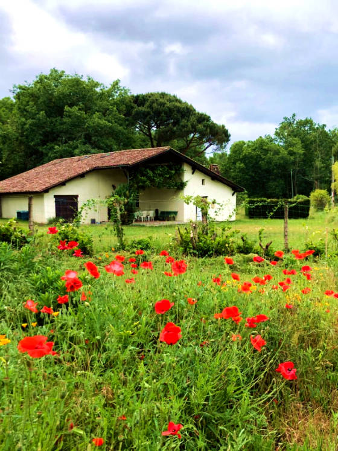
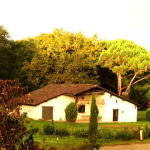
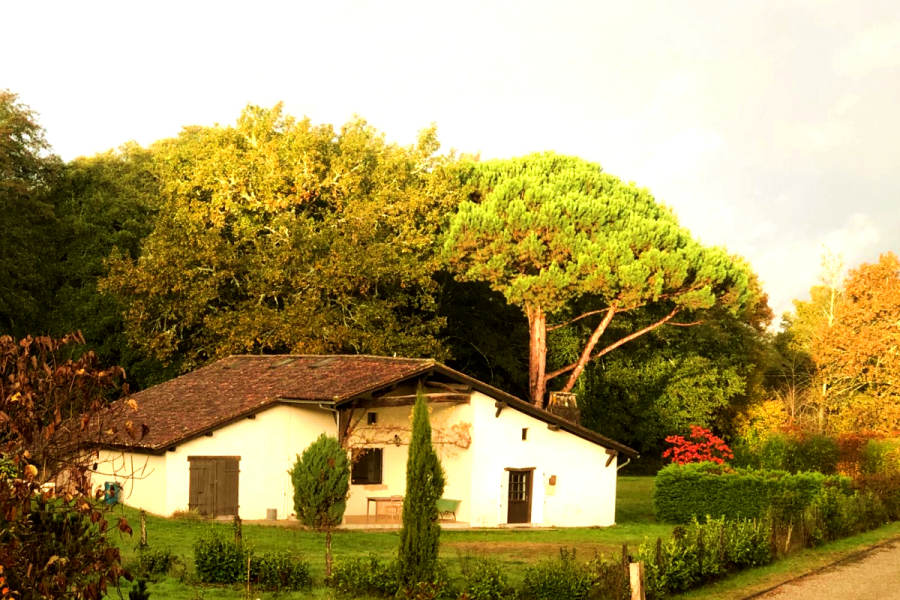
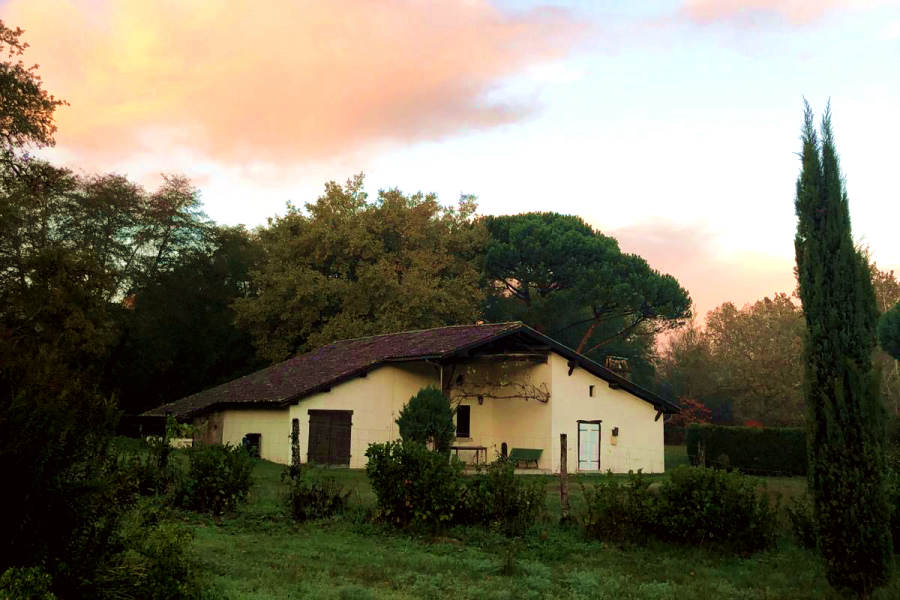
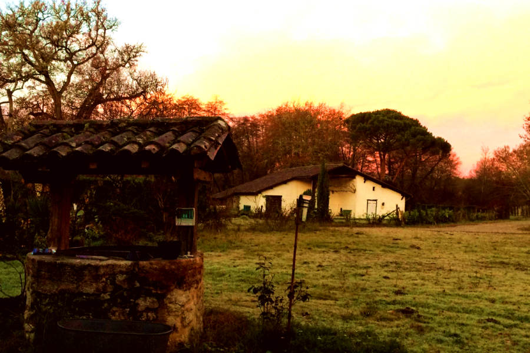
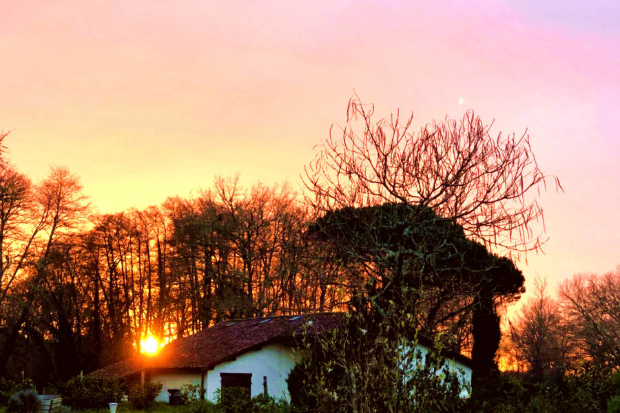
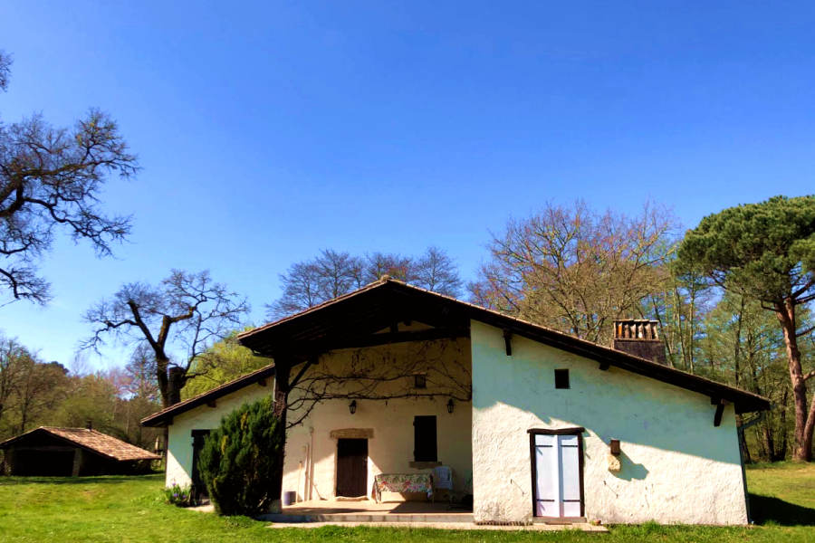
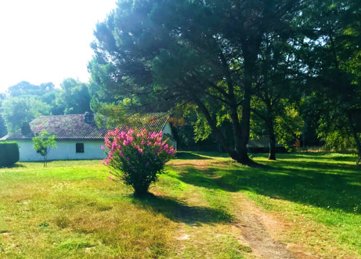
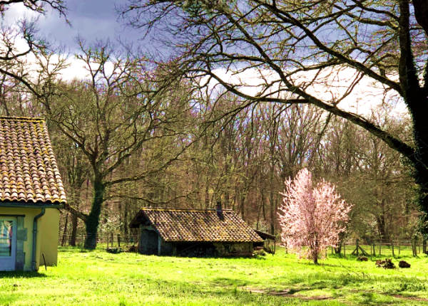

Grande maison calme · Parc 5 000 m² · Sauternes · Canoë · Visite exclusive grand cru


"Des chênes séculaires, un parc de 5 000 m² clos, le chant des oiseaux — ici, le temps retrouve son vrai rythme."
Aux portes des vignobles de Sauternes et des Graves, en lisière de la forêt landaise, cette maison ancienne entièrement rénovée vous accueille dans un parc clos de 5 000 m². En pleine nature, profitez de tout le confort avec une literie totalement neuve. L'auvent de l'ancien four à pain crée un espace repas extérieur ombragé, et une cabane dans les arbres enchantera les enfants pendant que vous vous détendez dans les transats à l'ombre des chênes séculaires.
Idéale pour les familles et groupes, la maison propose 4 chambres avec grande salle à manger (9 personnes), salon confort, cuisine entièrement équipée et accès direct à l'extérieur. L'équitation est à 100 m, la piste cyclable et les randonnées pédestres à 200 m, le canoë-kayak sur le Ciron à 2 km. Le village de Villandraut, à 1 km, offre tous les commerces et son marché local le jeudi matin.







À 200 m de la maison, prenez la piste cyclable ou le chemin de randonnée — laissez-vous surprendre par les chevreuils. L'équitation est à 100 m, le canoë-kayak sur le Ciron à 2 km. Châteaux médiévaux du XIVe siècle (Villandraut, Budos, Cazeneuve, Roquetaillade), vignobles de Sauternes et des Graves, village médiéval de Saint-Macaire, collégiale d'Uzeste — un patrimoine exceptionnel à portée de route. Et le jeudi matin, le marché des petits producteurs locaux de Villandraut ne manque pas d'attraits.
"Un endroit absolument magique. La maison est encore plus belle qu'en photos, le jardin est immense, le calme total et les chênes séculaires inoubliables. On reviendra sans hésiter !"
"Accueil chaleureux de la propriétaire, logement impeccable. La cabane dans les arbres a fait fureur avec les enfants ! La visite du château de Myrat et la dégustation de Sauternes étaient un moment exceptionnel."
"Coup de cœur total pour cette magnifique demeure. Tout est pensé dans les moindres détails. La vue sur le parc et le calme exceptionnel de ce lieu est inoubliable."
Tarif week-end disponible sur demande · Minimum 2 nuits · Les tarifs incluent les charges et le kit de bienvenue
Le Gîte de Villandraut est l'un des hébergements de charme les plus prisés du sud de la Gironde, dans une région touristique d'exception.
Le gîte est situé à Villandraut (33730), dans le sud Gironde, en Nouvelle-Aquitaine. À seulement 500 m du Château de Villandraut, il se trouve au carrefour de plusieurs sites touristiques majeurs : 8 km des vignobles de Sauternes, 12 km du Château de Roquetaillade, 15 km du Château de Cazeneuve et de la ville médiévale de Bazas, 18 km de Langon, baignade en lac à 22 km, océan Atlantique (Arcachon, Biscarrosse) à ~50 min et 1h de Bordeaux.
Le gîte offre 14 couchages répartis dans 5 chambres confortables. Il est parfait pour les grandes familles, les groupes d'amis, les anniversaires, les enterrements de vie de jeune fille ou garçon, et les week-ends en famille élargie. La grande cuisine équipée, le salon et la grande terrasse couverte et le jardin sont dimensionnés pour accueillir confortablement tout le groupe.
Le gîte est idéalement placé pour explorer les plus beaux châteaux du Sauternais et du sud Gironde :
La région offre un programme d'activités exceptionnel :
La réservation se fait par téléphone au 06 18 00 06 28 ou par email à denazelle.chantal@orange.fr. La propriétaire vous accueille avec le sourire et répond à toutes vos questions pour personnaliser votre séjour. Location draps : 12 €/lit/semaine. Linge de toilette : 5 €/personne/semaine. Équipement bébé (lit à barreaux, chaise haute) disponible.
Choisir le Gîte de Villandraut pour votre location de vacances en Gironde, c'est choisir l'une des plus belles régions de France. Entre vignobles classés UNESCO, forêts millénaires et châteaux médiévaux, le sud de la Gironde offre un cadre de vie et de détente incomparable, à seulement 1h de Bordeaux.
Notre maison de vacances en famille est idéalement positionnée pour rayonner vers les sites les plus courus : les châteaux de Cazeneuve, Roquetaillade, Budos et Villandraut (tous XIVe siècle !), la Cité médiévale de Bazas et ses remparts, Saint-Macaire, l'arboretum d'Uzeste — et bien sûr les dégustations dans les vignobles de Sauternes et Barsac (Yquem, Guiraud, Suduiraut, Lafaurie-Peyraguey…). Certains châteaux viticoles proposent également des restaurants gastronomiques de renom.
Le soir, autour d'une belle table, laissez-vous tenter par les saveurs du terroir gascon : huîtres, foie gras avec un verre de Sauternes, entrecôte bordelaise au bœuf de Bazas, confit de canard, asperges locales de Villandraut, cèpes d'automne, fraises gariguettes, cannelés… et les mythiques "Puits d'amour", petits choux à la crème Chiboust caramélisée, spécialité de la région. Un festin que les marchés locaux du jeudi à Villandraut (2 km), samedi à Bazas (15 km) et vendredi à Langon (18 km) vous aideront à composer.
Que vous recherchiez une location de maison de vacances au sud de Bordeaux, un gîte dans les Landes girondines, une maison familiale en Gironde ou simplement un hébergement de charme au cœur du vignoble en Nouvelle-Aquitaine, le Gîte de Villandraut est la réponse idéale pour un séjour ressourçant, culturel et gastronomique inoubliable.
La réservation se fait par téléphone. Notre équipe est disponible 7j/7 pour répondre à toutes vos questions et personnaliser votre séjour.